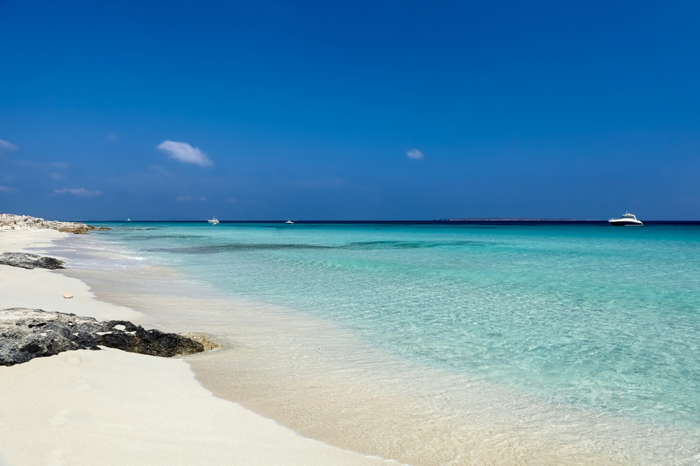
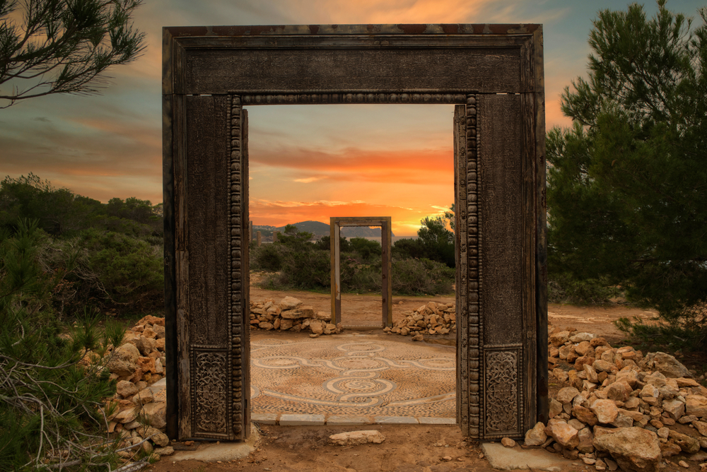

When to Visit Formentera and Ibiza
Spring: March to May
Spring blooms, and so does your adventure.
Spring is a delightful time to visit these islands, as the weather begins to warm up, and the crowds are still relatively sparse. During this season, you can enjoy pleasant temperatures, ideal for exploring the islands' natural beauty and pristine beaches. It's the perfect season for a romantic getaway or a serene escape, with blooming landscapes and calm seas.

Summer: June to August
The ultimate Mediterranean summer experience.
Summer is when Formentera and Ibiza truly come alive. The warm Mediterranean sun bathes the islands in glorious sunshine, making it the ideal time for water sports, beach parties, and vibrant nightlife. Charter a yacht and cruise along the coastline, discovering hidden coves and dancing the night away at world-famous beach clubs. It's the season for luxury and non-stop entertainment.

Autumn: September to November
A tranquil paradise in the Mediterranean.
As summer fades, autumn unveils a quieter side of Formentera and Ibiza. The weather remains pleasant, and the waters are still warm for swimming and snorkeling. September brings the famous Ibiza closing parties, while October and November offer a peaceful atmosphere for those seeking relaxation. Enjoy local cuisine, explore charming villages, and witness breathtaking sunsets during this serene season.
Winter: December to February
Experience a different kind of magic.
While winter may not be the typical choice for a beach vacation, Formentera and Ibiza still hold their charm during these months. The islands are quieter, allowing for a more intimate experience. You can explore historic sites, enjoy local festivals, and even hike through lush landscapes. It's an excellent time to unwind, detox, and discover the cultural heritage of these beautiful islands.

Whether you prefer the vibrant energy of summer or the tranquility of the off-season, Formentera and Ibiza offer a yacht charter experience like no other. Plan your visit wisely, and you'll be treated to an unforgettable journey through the Mediterranean's most enticing destinations. Discover the best time to visit these islands and create lasting memories aboard your yacht charter in Formentera and Ibiza.